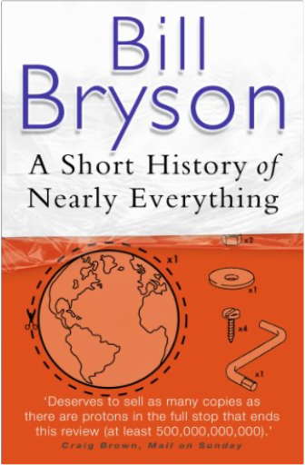

 Short History of Nearly EverythingBill Bryson Bill Bryson describes himself as a reluctant traveller: but even when he stays safely in his own study at home, he can't contain his curiosity about the world around him. A Short History of Nearly Everything is his quest to find out everything that has happened from the Big Bang to the rise of civilization - how we got from there, being nothing at all, to here, being us. Bill Bryson's challenge is to take subjects that normally bore the pants off most of us, like geology, chemistry and particle physics, and see if there isn't some way to render them comprehensible to people who have never thought they could be interested in science. It's not so much about what we know, as about how we know what we know. How do we know what is in the centre of the Earth, or what a black hole is, or where the continents were 600 million years ago? How did anyone ever figure these things out? On his travels through time and space, he encounters a splendid collection of astonishingly eccentric, competitive, obsessive and foolish scientists, like the painfully shy Henry Cavendish who worked out many conundrums like how much the Earth weighed, but never bothered to tell anybody about many of his findings. In the company of such extraordinary people, Bill Bryson takes us with him on the ultimate eye-opening journey, and reveals the world in a way most of us have never seen it before. The Oxford Japanese MinidictionaryJonathan Bunt The ideal reference for any student or general learner of Japanese, this dictionary is now in a handy, portable format for people on-the-go or for those traveling to a Japanese-speaking country. With thousands of words, phrases, and translations, this volume includes all the vocabulary you need for the first years of study.
It includes thousands of example phrases drawn from real-life situations that help illustrate how translations are really used. It also includes a useful guide on how to write Japanese characters, and Japanese script is used throughout. Finally, this dictionary provides full guidance on the pronunciation and use of Japanese words, such as common te and masu forms of verbs as well as plain and polite forms that are compared and contrasted.
Beginning with a helpful introduction to the Japanese language, this work is specially designed for the English speaker learning Japanese, whether in your first year of study or merely in need of a refresher. | Tao of PhysicsFritjof Capra The universe: an eternal cosmic dance of subatomic particles of relationships at once paradoxical, yet somehow unified.
Mystics explore our universe through meditation. Nuclear physicists explore it through experimentation and hypothesis. Their paths to the truth could not be more different-but the amazing thing is that in their own ways, the mystics and the scientists are discovering the same truths about our world.
In non-technical language, with no complex mathematics or formulae, this thought-provoking program explores the main concepts and theories of modern physics, the revelations coming from particle accelerators and laboratories-and compares them with the ancient tenets of Hinduism, Buddhism and Taoism. In the process, we gain a clear and fascinating picture of how such seemingly disparate areas of thought are ultimately quests for the same kind of understanding. Playing the Enemy: Nelson Mandela and the Game That Made a NationJohn Carlin In 1985, Nelson Mandela, then in prison for twenty-three years, set about winning over the fiercest proponents of apartheid, from his jailers to the head of South Africa’s military. First he earned his freedom and then he won the presidency in the nation’s first free election in 1994. But he knew that South Africa was still dangerously divided by almost fifty years of apartheid. If he couldn’t unite his country in a visceral, emotional way—and fast—it would collapse into chaos. He would need all the charisma and strategic acumen he had honed during half a century of activism, and he’d need a cause all South Africans could share. Mandela picked one of the more farfetched causes imaginable—the national rugby team, the Springboks, who would host the sport’s World Cup in 1995.
Against the giants of the sport, the Springboks’ chances of victory were remote. But their chances of capturing the hearts of most South Africans seemed remoter still, as they had long been the embodiment of white supremacist rule. During apartheid, the all-white Springboks and their fans had belted out racist fight songs, and blacks would come to Springbok matches to cheer for whatever team was playing against them. Yet Mandela believed that the Springboks could embody—and engage—the new South Africa. And the Springboks themselves embraced the scheme. Soon South African TV would carry images of the team singing “Nkosi Sikelele Afrika,” the longtime anthem of black resistance to apartheid.
As their surprising string of victories lengthened, their home-field advantage grew exponentially. South Africans of every color and political stripe found themselves falling for the team. When the Springboks took to the field for the championship match against New Zealand’s heavily favored squad, Mandela sat in his presidential box wearing a Springbok jersey while sixty-two-thousand fans, mostly white, chanted “Nelson! Nelson!” Millions more gathered around their TV sets, whether in dusty black townships or leafy white suburbs, to urge their team toward victory. The Springboks won a nail-biter that day, defying the oddsmakers and capping Mandela’s miraculous ten-year-long effort to bring forty-three million South Africans together in an enduring bond.
John Carlin, a former South Africa bureau chief for the London Independent, offers a singular portrait of the greatest statesman of our time in action, blending the volatile cocktail of race, sport, and politics to intoxicating effect. He draws on extensive interviews with Mandela, Desmond Tutu, and dozens of other South Africans caught up in Mandela’s momentous campaign, and the Springboks’ unlikely triumph. As he makes stirringly clear, their championship transcended the mere thrill of victory to erase ancient hatreds and make a nation whole. |


 Made with Delicious Library
Made with Delicious Library